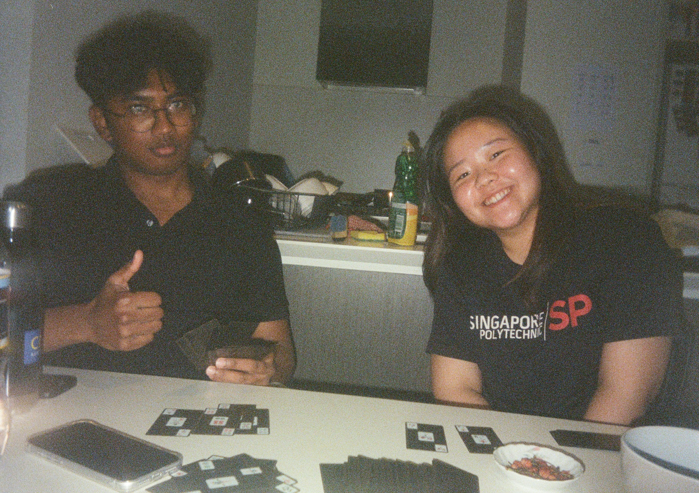
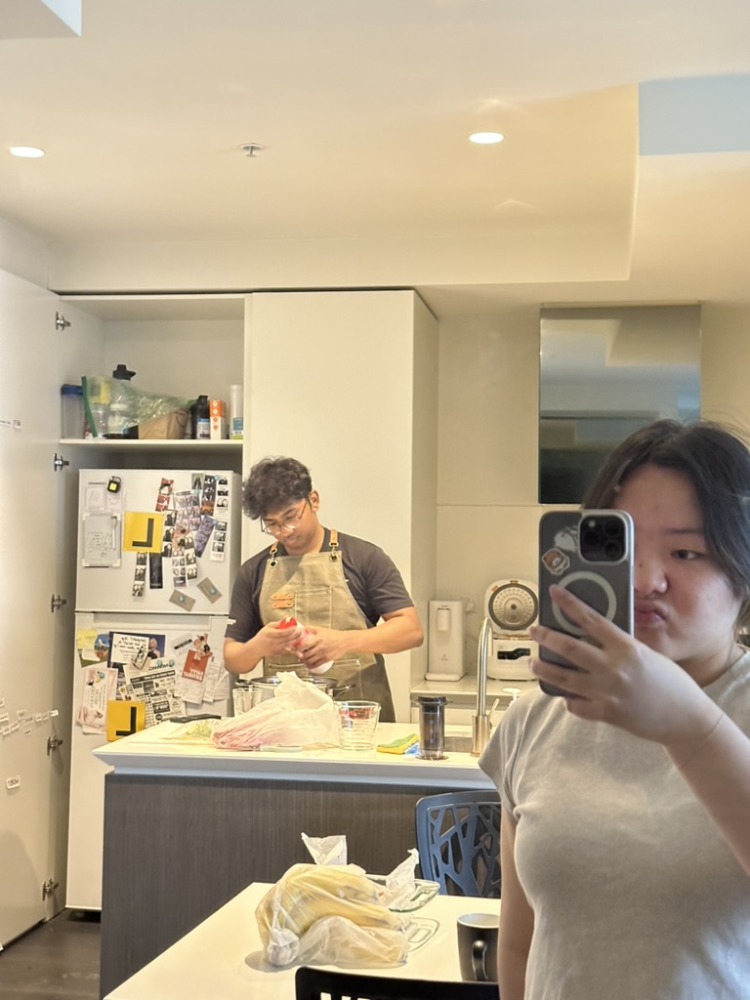

I love you so much baby. To many more celebrations together...
You make me feel like the most special girl at times. Having you is
like having a safe space for me to be myself.
Thank you for aways putting up with my shit no matter what. Even if
sometimes you get mad, you still come back.

We might be boring but I still love hanging out with you, at home,
going on walks and just talking about the most random stuff.

24 hours is not enough with you. I constantly crave more and want
more time with you.
Can't wait for the day we have our place and I get to come you to
you everyday and wake up to you. Imagine all the cuddles we can
have.
You make me feel so much. The bad and the good. But I know it is
worth it and I'm lucky to even be able to experience all of that,
and I am glad it is with you.
I'll try to be better for you and meet you at your speed. Following
your growth and succeeding with you.
You are loved and I'm so lucky to call you mine. You have been
through so much and your still standing. I am so proud of you for
constantly fighting and getting back up.
Do you know how much I think about you. Even after a long day I
wish I could faster get back to you just to touch you and
recharge
The greatest choice I made was swiping on you and taking the chance
and meeting you even though you were late.